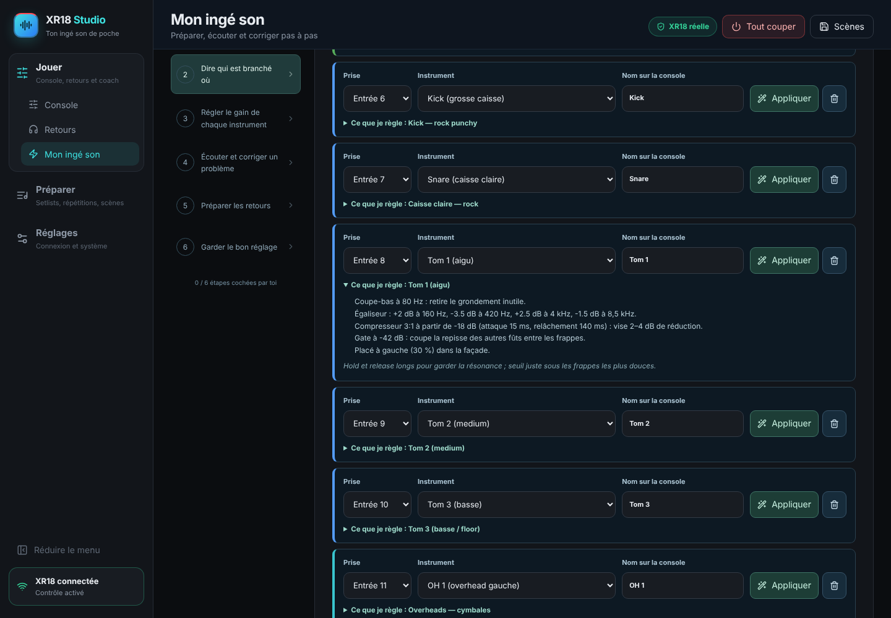
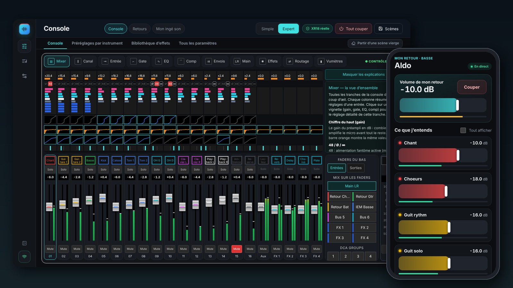
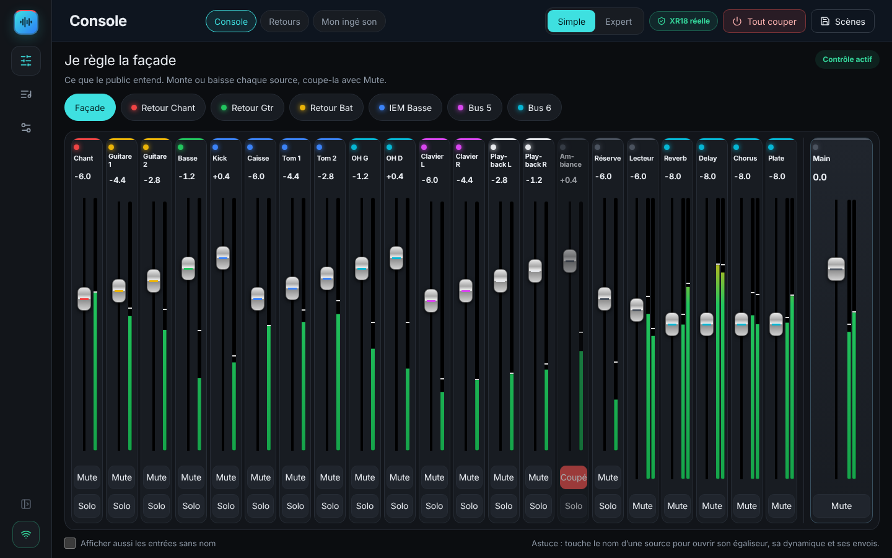
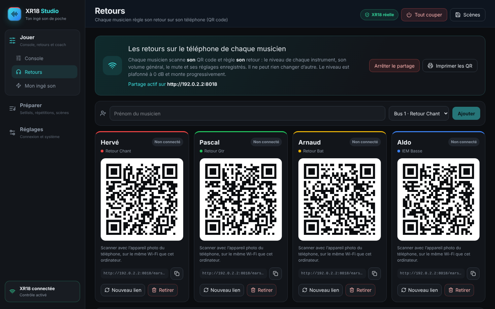
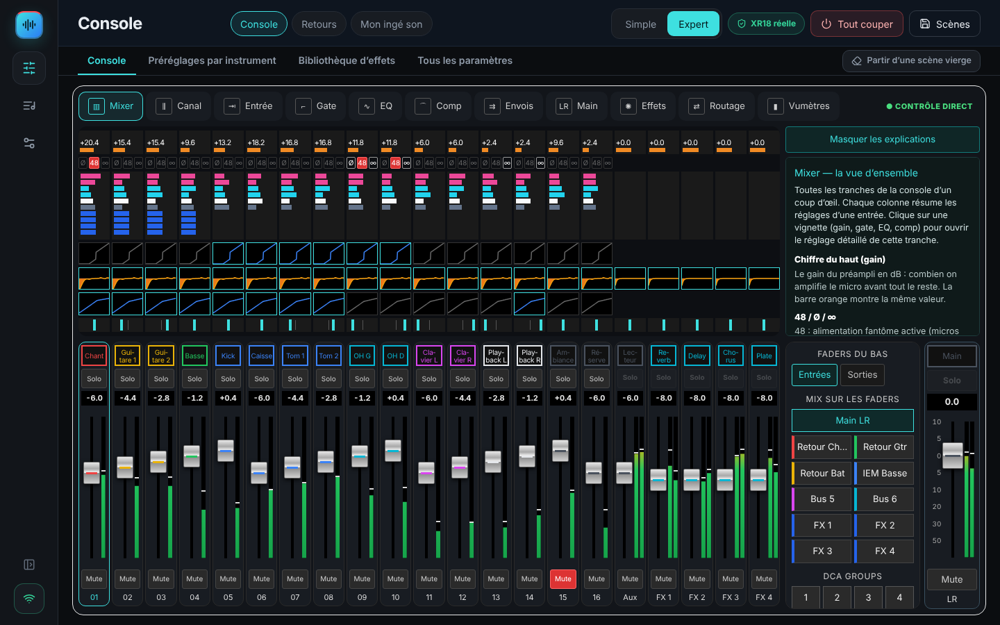
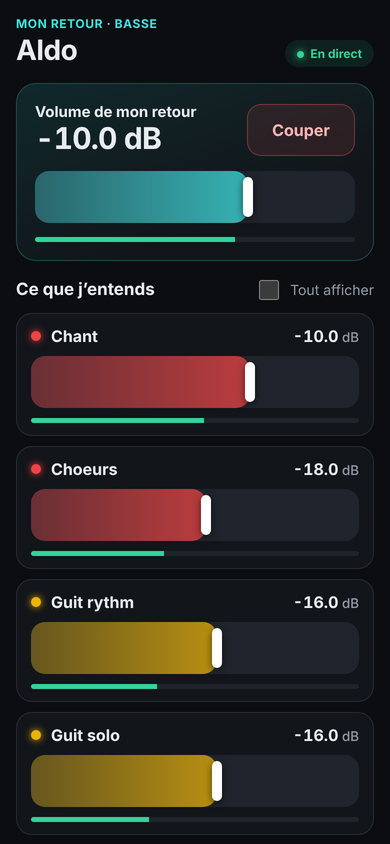

🎧 “Mon ingé son”
It sets up each instrument with live best practice, sets the gains with you and prepares the monitor mixes.
XR18 Studio is a free app to control your XR18, X18 or MR18. An assistant guides you step by step to make your band sound good. The console is complete, X-AIR Edit style. Each musician adjusts their in-ear mix on their own phone.
Windows · macOS (Intel and Apple Silicon) · Linux — no account, no subscription, no Internet needed

Rehearsals, small venues, bars, parties: you have a Behringer XR18, mics and musicians, and you want a good sound without learning the jargon.

It sets up each instrument with live best practice, sets the gains with you and prepares the monitor mixes.

Every track visible at once. Simple mode for the show, full X-AIR Edit style Expert mode.

Each musician scans their QR code and adjusts their own in-ear mix. There is no app to install.
Nothing changes without your OK: every change goes through a before/after window, a backup is made, and one button undoes it all.


Download the file for your computer from the releases page. Everything is included.
| Computer | File |
|---|---|
| Windows | XR18-Studio-Windows-….exe |
| Apple Silicon Mac (M1, M2, M3, M4) | XR18-Studio-macOS-…-arm64.dmg |
| Intel Mac | XR18-Studio-macOS-…-x64.dmg |
| Ubuntu / Debian | .deb |
| Other Linux | .AppImage |
Mac: the first time, right-click › Open, then allow Local Network. Windows: if SmartScreen appears, “More info › Run anyway”. Full guide
It offers the same views (Mixer, Channel, Input, Gate, EQ, Comp, Sends, Main, Effects, Routing, Meters). It adds a beginner assistant and monitors on phones. You can use both on the same console.
Yes, free and open source (MIT licence).
Yes: XR18, X18, MR18 and their V2 versions are detected automatically.
No. Each one scans their QR code and adjusts their mix in their phone browser, on the same Wi-Fi.
No. Everything runs on the console’s or the band’s local network.
No. It reads the console’s settings and levels, not the audio. Its listening advice comes from your description. Proposed values are starting points: your ears have the final say.
The interface is in French. The guides and the tutorial are available in English, with every French button name translated.